Akide Liu1,2,3,‡, Jinbo Xing2,†, Chaojie Mao2, Ye Li3, Zeyu Zhang3, Yefei He3, Weijie Wang3, Zihan Wang4, Yu Liu2, Gholamreza Haffari1, Bohan Zhuang3,†
1Monash University 2Tongyi Lab, Alibaba Group 3Zhejiang University 4University of Queensland
Minute-scale cinematic video generation is a central challenge for generative video models. Existing paradigms address only fragments of this challenge: single-shot extrapolation preserves an anchor but lacks cinematic structure, while multi-shot storytelling imposes structure yet remains free to invent its visual states rather than continue an observed one. We define Multi-Shot Video Extrapolation (MSVE), a task that extends an observed frame or clip into a sequence of cinematically structured shots while preserving anchor state and advancing narrative intent. This setting operates under the finite per-call generation budget of short-video models. We identify three coupled bottlenecks: (1) global planners over-specify unsupported details from full screenplays; (2) shot-level prompts dilute task-relevant state when carrying the complete story; (3) temporal chaining turns generated frames into a lossy memory in which identity, scene, object, and action state decay. MSVE reveals that long-video failure is not merely a limitation of context length, but a failure of context allocation. We propose Recursive Context Allocation (ReCA), an inference-time framework that allocates context hierarchically across planning and generation. ReCA recursively decomposes MSVE into context-bounded subproblems, invokes frozen generators at leaf nodes, and propagates structured state updates across time. To evaluate this setting, we further propose MSVE-Bench and NB-Q, a source-grounded protocol with prompts purpose-built for 3–5 minute long-video generation, a regime not addressed by existing short-clip benchmarks. Compared to previous methods, ReCA improves average normalized score by 8–16% over the strongest competing controller and improves multi-shot consistency metrics by 28–43%. View the project page at https://reca.vmv.re.
Date: May 27, 2026
1 Introduction
Minute-scale cinematic video generation is a central challenge for generative video models. Recent systems synthesize compelling short clips and extend them through image-to-video continuation, clip stitching, memory mechanisms, or language-based planning (Ho et al., 2022b; Singer et al., 2022; Ho et al., 2022a; Hong et al., 2022; Blattmann et al., 2023; Bar-Tal et al., 2024; Kondratyuk et al., 2023; Yang et al., 2024; Polyak et al., 2024; Lin et al., 2024), but minute-scale cinematic videos are not merely longer clips: they are structured sequences of shots in which characters, objects, scenes, viewpoints, and narrative events evolve across cuts. Existing paradigms capture only part of this requirement: single-shot extrapolation preserves an observed anchor but produces one continuous take without cinematic structure (Ni et al., 2023; Chen et al., 2023; Khachatryan et al., 2023; Xing et al., 2023; Guo et al., 2023; Yin et al., 2023), while multi-shot storytelling and text-to-multi-shot generation introduce shot structure but begin from text and are free to invent the visual world rather than continue an observed one (Villegas et al., 2022; Lin et al., 2023; Kara et al., 2025; Wu et al., 2025; Wang et al., 2025b; Long et al., 2024; Hong et al., 2023; Zhou et al., 2024; Gong et al., 2023). This leaves a task gap: current settings either preserve an observed world without multi-shot structure, or impose multi-shot structure without source-grounded extrapolation.
We introduce Multi-Shot Video Extrapolation (MSVE), a source-grounded long-video generation task that unifies these two requirements. Given an observed visual anchor v0, a narrative intent c, a target duration T, and a short-video generator G with finite per-call duration and conditioning budgets, MSVE asks a system to
†Corresponding Author ‡Note: Akide Liu is an intern at Tongyi Lab, Alibaba Group.
Script A traveler arrives at a mountain lake. They set up camp. Sunset falls. Night by the fire.
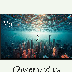 v |
|---|
Extrapolated continuation (one shot)
Generated shots (free world)
Single-Shot Extrapolation Model
Multi-Shot Storytelling Model
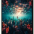 |
|---|
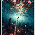 |
|---|
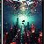 |
|---|
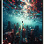 |
|---|
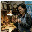
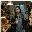
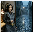
···
Shot 1 Shot 2 Shot 3 Shot 4
Observed v
✘ Misses: shot transitions, narrative progression, long-range state.
(a) Single-Shot Extrapolation (b) Multi-Shot Storytelling
OURS
|
v₀ |
|---|
|
S1 35 |
|---|
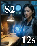 S2 12 |
|---|
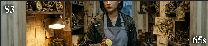 S3 65 |
|---|
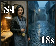 S4 18 |
|---|
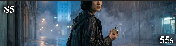 S5 55 |
|---|
Observed v
Outer planner — chooses #shots & per-shot duration Inner planner — fine- grained state & camera Validator — checks identity / events / continuity
father's engraving
11:58 f…
back repair room
rainy street…
blue clock-tower destination
Intent Continue v : father's engraving
cross-shot identity / scene / object / action / style consistency
→ 11:58 flicker → back repair room → rainy street exit → blue clock-tower destination.
Adaptive shot → chunk → segment hierarchy
shot · S1 shot · S2 shot · S3 shot · S4 shot · S5
chunk chunk chunk chunk chunk chunk chunk chunk chunk chunk
↑ shot · chunk · segment — adaptive granularity instead of a fixed 5 s grid
Per-shot duration is decided by the model, not a fixed grid — short beats stay short (12s), long beats can breathe (65s).
Anchored to one observed frame v — the model continues this exact world, not an invented one.
Across shots, camera, location and viewpoint change freely; identity, scene, objects, action and style stay consistent.
✓ Keeps: identity · scene · objects · action · style across shots.
(c) MSVE — Anchored Adaptive Multi-Shot Extrapolation (Ours)
Figure 1 Multi-Shot Video Extrapolation (MSVE). (a) Single-shot extrapolation extends an anchor into one continuous take but lacks cinematic structure. (b) Multi-shot storytelling imposes shot structure but does not preserve an observed anchor. (c) MSVE combines both: from v0, c, and T the system generates an adaptive shot sequence {si}ni=1 with
i di = T that preserves anchor state, advances the narrative, and produces plausible transitions under a finite per-call budget.
generate
n
V = {si}ni=1,
di = T,
i=1
where the number of shots, shot boundaries, shot durations, and per-shot conditioning states are chosen by the system. A valid output must preserve the anchor state in v0 (including identity, scene layout, objects, style, and physical configuration) while advancing the narrative intent, maintaining cross-shot consistency, and producing plausible transitions. Thus, MSVE reduces to single-shot continuation when n = 1, and to text-to-multi-shot storytelling when the observed anchor is removed; the full task requires both anchored extrapolation and adaptive multi-shot progression. Figure 1 positions MSVE against single-shot extrapolation and multi-shot storytelling.
MSVE exposes a failure mode that is obscured when long video generation is framed only as increasing duration or context length. The failure of long video generation is not primarily a limitation of context length, but a failure of context allocation. More prompt text, more generated history, or more detailed plans do not necessarily provide more usable state to the next generation call. This mirrors findings in long-context language modeling, where nominal context windows can diverge sharply from usable context (Liu et al., 2023a; Hsieh et al., 2024; Bertsch et al., 2025; Bai et al., 2023b; Zhang et al., 2024; Wang et al., 2024a; Packer et al., 2023; Jiang et al., 2023, 2024). In video generation, the problem is harder because the relevant state is multimodal and temporal: identity, layout, object status, action progress, camera state, narrative goals, and transition constraints must be selected and refreshed across calls.
We identify three coupled bottlenecks. First, the global planning bottleneck: conditioning a planner on a full screenplay often leads to over-specified details unsupported by the observed anchor, causing the plan to drift away from the source world. Second, the shot-level context bottleneck: passing the complete story or character bank into every shot dilutes the small set of state variables that the current shot must preserve. Third, the temporal chaining bottleneck: using the previous generated frame or clip as the sole memory turns generation into a lossy state-propagation process, where identity, scene, object, and action consistency decay over time.